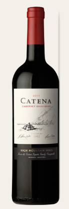
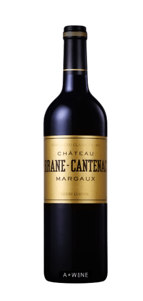
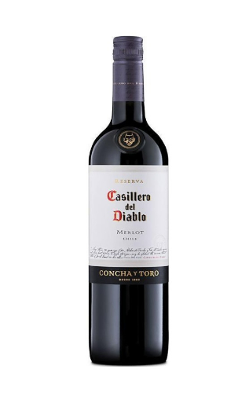
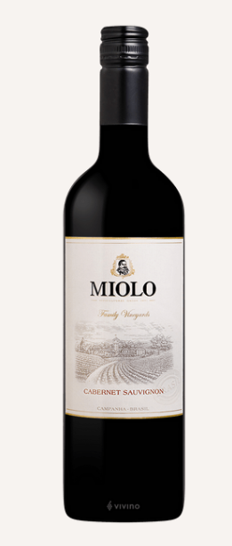
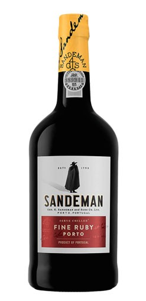

까테나 까베르네 소비뇽(Catena Cabernet Sauvignon 2011)
검은빛이 도는 어두운 자주색을 띠고 레드베리, 블랙페퍼의 아로마를 느낄 수 있으며 다양한 고기요리와 즐기면 좋을 와인입니다.
- 원산지: 남미/아르헨티나(Valle Central)
- 가격: 39000원
- 특징: 견고함과 세련된 맛

샤또마고(Chateau Margaux)
짙은 루비 컬러를 띠며, 클랙커런트, 블랙베리, 야생딸기, 바이올렛, 블랙페퍼, 장미 향이 강한 와인입니다.
- 원산지: 유럽/프랑스(Bordeaux)
- 가격: 900000원
- 특징: 우아함

까시에로 델 디아블로 메를로(Casillero del Diablo Merlot)
까시에로 멜롯은 밝고 짙은 자주빛을 띠고 블랙베리와 자두 향, 약간의 바닐라와 토스트 향이 있으며, 부드럽고 바디감이 좋은 와인입니다.
- 원산지: 남미/칠레(Rapel Valley)
- 가격: 13000원
- 특징: 풍만한 타닌과 오랜 피니시가 느껴지는 좋은 발렌스

미올로 까베르네 소비뇽(Miolo Cabernet Sauvignon)
루비 레드, 말린 과일, 붉은 과일 향이 강한 와인입니다.
- 원산지: 남미/브라질(Campanha)
- 가격: 35000원
- 특징: 붉은과일 향이 풍부함

루비 포트(Ruby Porto)
샌드맨 루비 포트는 전문적으로 블렌딩되어 맛이 깊고 정돈된 느낌을 가져다주는 포트 와인입니다.
- 원산지: 유럽/포르투갈(Porto)
- 가격:45000
- 특징: 빛나는 레드 루비색의 이 와인은 붉은 과일인 플럼과 스트로베리의 깨끗한 아로마향